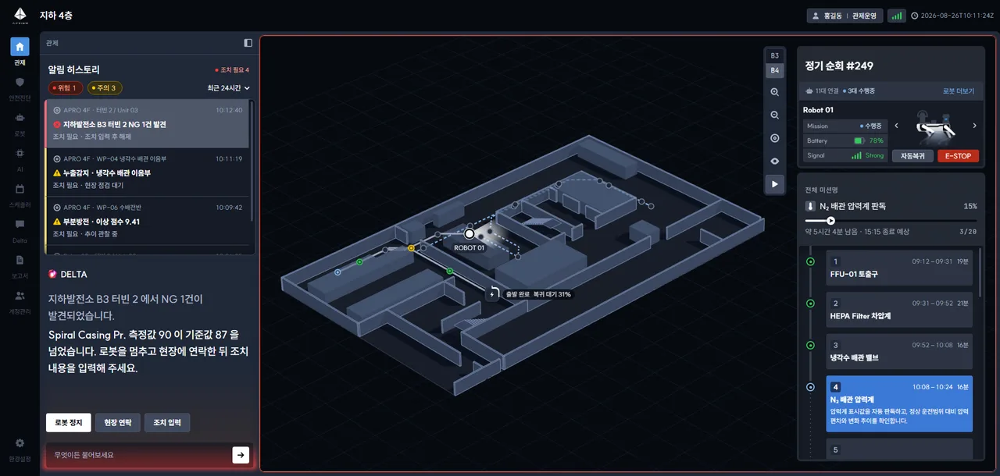
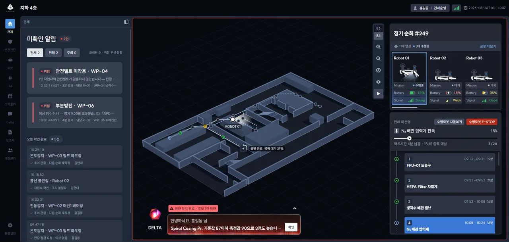
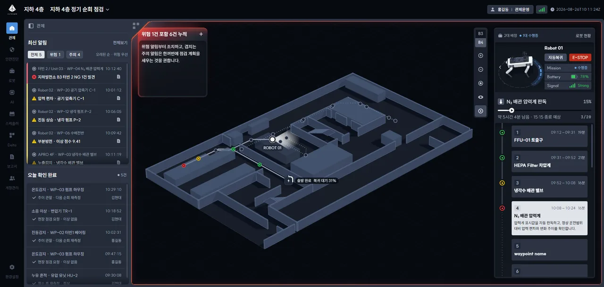
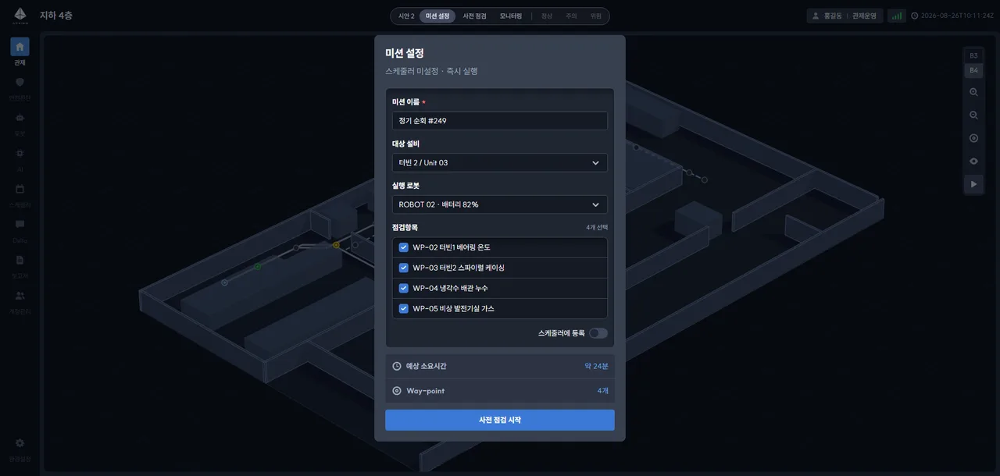
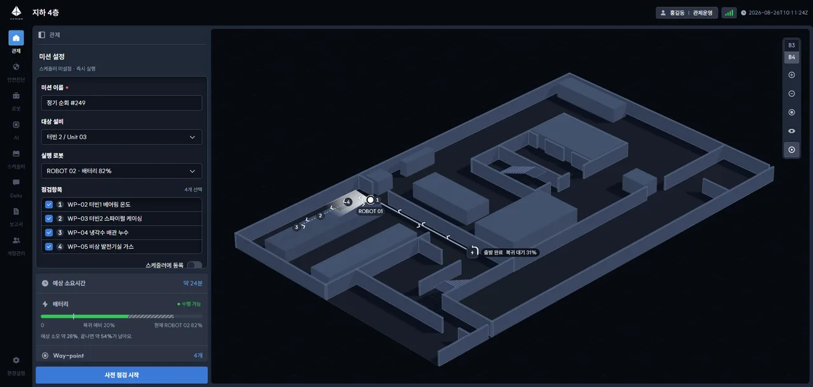
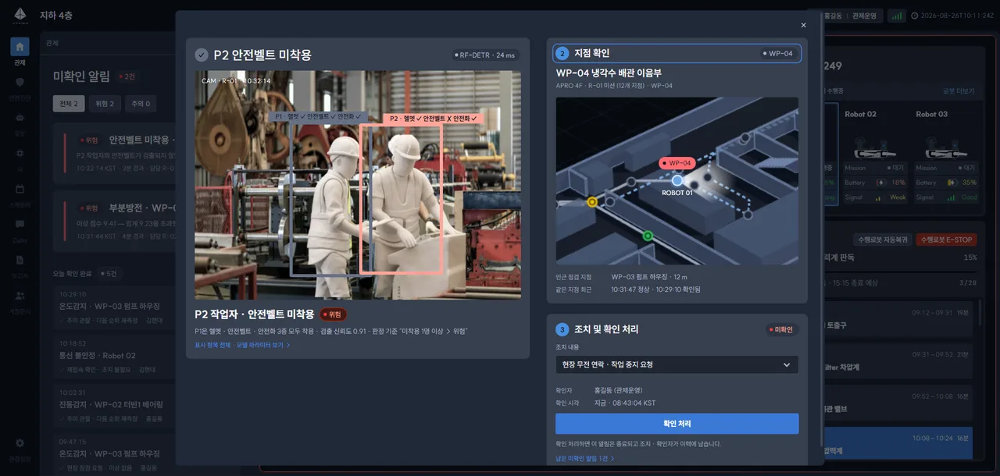
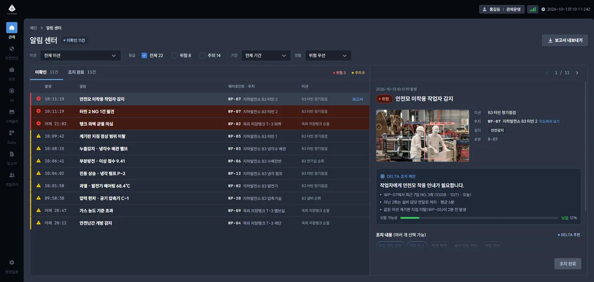

Since Sian 1
시안 1 이후 달라진 점
자문받은 시안 1-A(좌측 패널형) · 1-B(모달형)(2026.09.17)에서 지금의 v2.2 미션 기준 화면(2026.10.12~)까지 무엇이 왜 바뀌었는지 한 장으로 정리했습니다. 사이에 v2(통합판, 09.21)와 v2.1(Delta 창형, 09.28 · 10.06 클라이언트 회의)을 거쳤습니다.
화면의 기준
장소 · 최근 24시간 → 미션 하나
Delta
알림 하나 해설 → 전체 알림 종합 판단
경고 표현
위험 · 주의 같은 테두리 → 강약을 크게 가름
조치
화면을 덮는 모달 → 지도 위 쪽지에서 바로
화면 비교

알림 히스토리 + 아래 절반 Delta 해설

미확인 알림 카드 + 지도 아래 Delta 띠

미션 고르기 · 한 줄 알림 · 모서리 Delta
달라진 점 8
| 주제 | 시안 1-A · 1-B | v2.2 |
|---|---|---|
| 01화면의 기준 | 상태바에 장소(지하 4층)만. 알림은 최근 24시간을 모두 보여 지금 돌고 있는 순회와 섞였다. | 상태바에서 미션을 고른다. 고른 미션 하나로 최신 알림 · 로봇 패널(배정된 로봇만) · 지도 층이 같이 바뀐다. 미션이 끝나면 알림은 알림 센터로 간다. 관제자가 실제로 지켜보는 단위가 "이번 순회"다(10/06 클라이언트 회의). |
| 02알림 목록 | 1-A 는 세 줄짜리 항목에 조치 상태 문장까지, 1-B 는 큰 카드라 한 화면에 두 건 남짓 보였다. | 위치 · 제목 · 시간 두 줄 목록. 위험 · 주의로 거르고 "오래된 순 · 위험 우선"으로 정렬한다. 끝난 건은 아래 오늘 확인 완료로 내려가 남은 일과 한 일이 갈린다. 많이 쌓였을 때 훑는 속도와, 무엇이 남았는지가 먼저 보여야 한다. |
| 03Delta(AI)의 역할 | 1-A 는 고른 알림 하나를 큰 글씨로 해설하고 행동 버튼 셋 · 입력창이 늘 열려 패널 절반을 썼다. 1-B 는 지도 아래 띠 하나. | 알림 하나가 아니라 전체 알림을 종합해 판단한다("위험 1건 포함 6건 누적"). 지도 왼쪽 위 모서리의 작은 창으로 접힘 · 펼침 · 대화를 오가고, 입력창은 열었을 때만 보이며 너비를 끌어 조절한다. 알림을 고를 때마다 같은 말을 따라 하던 해설은 목록과 겹쳤다. AI 는 여러 건을 묶어 볼 때 쓸모가 있다. |
| 04경고의 강약 | 위험은 지도 네 변에 빨간 테, 주의도 네 변에 노란 테. 세기가 같아 늘 경보 상태처럼 보였다. | 위험은 네 변 빛 + Delta 판이 빛을 낸다. 주의는 Delta 모서리에만 노란 빛을 둔다. 화면의 경고 색은 하나(가장 높은 단계)로 맞췄다. 주의가 잦은 현장에서 늘 켜진 경보는 무뎌진다 — 위험이 확실히 튀도록 주의를 덜어냈다. |
| 05알림 확인 · 조치 | 1-B 는 화면을 덮는 큰 모달에서 ① 확인 ② 지점 ③ 조치를 차례로. 지도와 다른 알림이 가려졌다. 1-A 는 Delta 버튼으로. | 알림을 고르면 지도 위 웨이포인트 옆 쪽지가 뜬다. 사진 · 위치 · DELTA 조치 제안을 보고 조치 칩(여러 개)을 골라 [조치 완료] — 줄이 오늘 확인 완료로 내려가고 되돌리기 토스트가 남는다. 어디서 일어났는지(지도)를 보면서 처리해야 판단이 빠르고, 화면을 떠나지 않는다. |
| 06로봇 패널 | 연결된 로봇 전체(11대 연결 · 3대 수행중)가 대상. 1-B 는 세 대를 카드로 나열하고 자동복귀 · E-STOP 이 "수행 로봇 전체" 버튼이었다. | 미션에 배정된 로봇만, 한 대씩 크게 넘겨 본다("2대 배정 · 1대 수행중"). 자동복귀 · E-STOP 은 보고 있는 로봇 옆에 붙었다. 미션 밖 로봇은 [로봇 현황]이 맡는다. 비상 버튼은 대상이 분명해야 한다. |
| 07색 · 버튼 위계 | 파랑이 선택된 타임라인 칸 · 버튼 · 링크 · 상태에 두루 쓰여 무엇이 중요한지 흐려졌다. | "파랑은 상태이거나 지금 할 단 하나의 행동." 지금 칸은 흰 면, 이동 · 보조는 회색 글자. 버튼은 6단계(Danger 빨강은 E-STOP 만 · Accent 파랑은 영역당 하나 · Primary · Secondary · Ghost · Icon). 색이 뜻을 하나만 가져야 경고색이 경고로 읽힌다. |
| 08지도 · 바탕 정돈 | 지도 길 점선과 타임라인 점선이 달랐고, 바탕의 밝기 단계가 정해져 있지 않았다. | 남은 길 점선을 타임라인 점선과 같은 무늬로 맞췄다. 바탕은 GNB · 알림 목록 · 관제 프레임 세 단으로 정리했고 라이트 테마도 같은 순서를 따른다. 아이콘은 아웃라인 세트로 바꾸고 16px 용을 따로 둔다. 같은 뜻은 같은 모양으로 — 지도와 목록이 한 화면처럼 읽힌다. |
미션 설정 · 알림 센터




남은 것
아직 정하지 않은 것
- Delta 종합 기준과 행동 버튼 문구 — 지금은 임시 규칙(주의 + 위험 5건 이상 · 위험 1건이라도 있으면 위험)이고, 버튼은 모두 Secondary 로 둔 상태.
- 지도의 현장 사진 표현 — 배관 같은 세부가 없어 현장 사진으로 보완하기로 함(10/06 회의). 비식별화 패턴과 함께 진행 예정.
- 보고서 화면 — 알림마다 [보고서] 자리만 있고 설계 전.